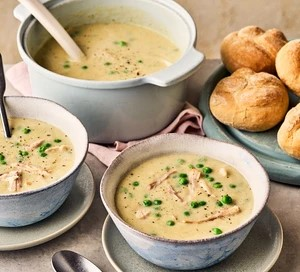

Chicken Soup

Ingredients
- 2 tbsp olive oil
- 1 onion
- 275g leeks
- 100g potatoes
- 1 garlic clove
- 1 tsp dried thyme
- 500ml chicken stock
- 600ml milk
- 200g roast chicken
- 150g frozen peas
Steps
- Heat the oil in a large lidded pan over a medium heat and cook the onion for 4-5 mins, stirring, until softened. Stir in the leeks, potatoes, garlic and thyme. Lower the heat, then cover the pan and cook for 10 mins. Pour in the stock, stir to combine and bring gently to the boil.
- Lower the heat to a simmer and cook for 15 mins or until the potatoes are tender. Remove from the heat and blend with a stick blender until smooth. Pour in the milk, then add the chicken and bring gently back to the boil. Stir in the peas and cook for 3-4 mins. Season with a healthy grinding of salt and black pepper, to serve.